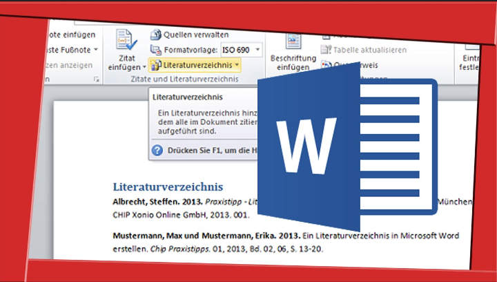

Oberstufenportal
Q1: Crash Kurs Lippe am Donnerstag, 19.2., 3.-6. Stunde (nähere Infos per Mail)
Jgst. 10: Elternabend zur Information über die Oberstufe: Mittwoch, 18.2., 18.30 Uhr in der Neuen Aula
Jgst. 10: Klasseninfoveranstaltungen vom 20. bis 25.2. (Infos per Mail)
EF: Stufenversammlung zur Qualifikationsphase: Dienstag, 3.3., 6. Stunde in der Neuen Aula
EF: Elternabend zur Information über die Qualifikationsphase: Mittwoch, 4.3., 18.30 Uhr in der Neuen Aula
Anträge für Bücher, Ausweise, Tablets
Wer den Termin zur Bücherausgabe verpasst oder ein Schulbuch verloren hat, kann sich direkt an Herrn Rieche wenden. Dieser ist auch für die Erstellung der Schülerausweise zuständig.
Schülerinnen und Schüler, die einen WLAN-Zugang bekommen möchten, können diesen bei Frau Knüppel beantragen, indem sie das Antragsformular hier herunterladen und ausgefüllt im Lehrerzimmer abgeben. Bitte denkt daran, dass für euch natürlich trotzdem die in der Hausordnung festgelegten Regeln für den Gebrauch von Handys und anderen mobilen Geräten gelten! Wer sein privates Tablet im Unterricht nutzen möchte, kann dies durch Abgabe des unterschriebenen Tablet-Knigges beantragen.
Antrag WLAN
Tablet-Knigge
Alle Lehrenden und Lernenden unserer Schule haben die Möglichkeit, Office 365 zu nutzen; dafür ist kein gesonderter Antrag erforderlich.
Kurzanleitung Office 365:
- Office bereitstellen: Für iPads Programm(e) aus dem App Store installieren, für Windows und Android entsprechende Stores verwenden. Alternativ im Browser die Seite www.office.com öffnen. Auf dieser Portalseite kann (nach Anmeldung) oben rechts der Download der Programme gestartet werden oder links aus den Online-Programmen gewählt werden.
- Anmeldung: Die Anmeldedaten von IServ verwenden. Die Anmeldemaske unterscheidet sich je nach Bereitstellung. Tipp: Bei Anmeldung direkt bei Office (App oder Internet-Seite) beim Nutzerinnennamen die Form mit ...@grabbe-dt.de wählen. Wenn sich eine Internet-Seite mit der Adresse ....grabbe-dt.de und dem Grabbe-Logo öffnet, dann ohne ...@grabbe-dt.de.
- Bei Fragen gerne SPR, HIG, KNU oder WEB ansprechen.
Die gymnasiale Oberstufe
Die Regeldauer der gymnasialen Oberstufe beträgt drei Jahre. In der Einführungsphase werden die Schülerinnen und Schüler mit den inhaltlichen und methodischen Anforderungen der Oberstufe vertraut gemacht. Der Unterricht findet nicht mehr im Klassenverband statt, sondern in Grundkursen. Diese sind in der Regel dreistündig, in der neu einsetzenden Fremdsprache vierstündig. Auf der Grundlage der Vorgaben der APO-GOSt (Ausbildungs- und Prüfungsordnung für die Gymnasiale Oberstufe) können Fächer und Schwerpunkte nach individuellen Stärken und Neigungen gewählt werden.
Zu Beginn der Qualifikationsphase werden aus den bisher belegten Kursen zwei als Leistungskurse ausgewählt, die jeweils fünfstündig unterrichtet werden. Die zweijährige Qualifikationsphase baut auf den in der Einführungsphase erworbenen Grundlagen auf und bereitet auf die Abiturprüfung vor. Die im Laufe der Qualifikations�phase erbrachten Leistungen gehen bereits als Block I in die Abiturendnote ein. Die eigentliche Abiturprüfung besteht dann aus drei Klausuren in den beiden Leistungskursen und einem weiteren schriftlich belegten Fach sowie einer mündlichen Prüfung.
Im Laufe der Oberstufe sind insgesamt 102 Wochenstunden zu belegen, davon 34 in der Einführungsphase. Die Kernunterrichtszeit endet mit der 9. Stunde, in Ausnahmefällen liegen Kurse aber auch am späteren Nachmittag. (Hier findet ihr das Stundenraster am Grabbe mit den genauen Zeiten für alle Stunden.)
Zur Erleichterung des Übergangs in die Oberstufe, die von den Schülerinnen und Schülern ein hohes Maß an Selbstständigkeit und Eigenverantwortung fordert, wird am Grabbe-Gymnasium der Unterricht in den in der Regel von allen belegten Fächern Deutsch, Mathematik, Englisch und Sport in der Einführungsphase noch in Stammgruppen erteilt, sodass die Schülerinnen und Schüler in diesen Fächern immer mit derselben Lerngruppe Unterricht haben.
Traditionell liegt uns besonders die Förderung von Schülerinnen und Schülern aus der Realschule am Herzen, die ihre Schullaufbahn in der gymnasialen Oberstufe fortsetzen möchten. Diesen bieten wir individuelle Hospitationsangebote und Beratungstermine an. Vertiefungskurse in Deutsch, Mathematik und Englisch in der Einführungsphase bieten allen Schülerinnen und Schülern die Möglichkeit, Defizite in diesen für den Erfolg in der Oberstufe zentralen Fächern aufzuarbeiten, bevor sie in die Qualifikationsphase eintreten. Bei Bedarf können zusätzlich Vertiefungskurse in der Qualifikationsphase eingerichtet werden. Bei persönlichen oder schulischen Problemen stehen darüber hinaus vielfältige Möglichkeiten der inner- und außerschulischen Beratung zur Verfügung (siehe dort).
Aufgrund der guten Kooperation mit den beiden anderen Detmolder Gymnasien können wir unseren Schülerinnen und Schülern in der Oberstufe ein breites Leistungskurs-Angebot machen, darunter Kunst, Musik und Sport als Besonderheiten unseres Schulprofils. Im Bereich der Fremdsprachen bieten wir zur Zeit Latein, Spanisch und Französisch als neu einsetzende Fremdsprachen an, Englisch Französisch und Latein als fortgeführte Fremdsprachen. Auch hier versuchen wir, durch die Kooperation mit Leopoldinum und Stadtgymnasium möglichst viele Schülerwünsche zu erfüllen.
Neben der Allgemeinen Hochschulreife können die Schülerinnen und Schüler in der Oberstufe auch den schulischen Teil der Fachhochschulreife erwerben. Die auslaufenden G8-Jahrgänge erwerben zudem am Ende der Einführungsphase den Mittleren Schulabschluss (Fachoberschulreife), sofern dieser noch nicht an einer zuvor besuchten Schule erreicht worden ist. Schülerinnen und Schüler, die Latein gewählt haben, können zusätzlich das Latinum erwerben.
Darüber hinaus bereitet die Oberstufe durch gezielte Förderung des wissenschaftspropädeutischen Arbeitens, z.B. im Rahmen der Facharbeitsvorbereitung, und ein vielfältiges Angebot an Berufsorientierungsmaßnahmen (siehe dort) auf das Leben nach der Schule vor. Durch unser etabliertes Vertretungskonzept wird sichergestellt, dass Lernzeit auch bei unvorhergesehenem Unterrichtsausfall sinnvoll genutzt werden kann. Dazu steht den Schülerinnen und Schülern unter anderem ein gut ausgestattetes Selbstlernzentrum mit einem umfangreichen Medienangebot und 12 Computerarbeitsplätzen zur Verfügung, das in den Pausen und Freistunden genutzt werden kann.
Im Bereich unserer Profilfächer können die Schülerinnen und Schüler aus einem breiten Angebot an AGs und instrumental- und vokalpraktischen Kursen auswählen. Zur Förderung von Schülerinnen und Schüler mit besonderen Interessen und Fähigkeiten treffen wir bei Bedarf gerne individuelle Vereinbarungen zur Laufbahnplanung. Hier sind als Optionen z.B. die besondere Lernleistung, das Jungstudium an einer regionalen Hochschule, die Teilnahme an Wettbewerben oder auch Sonderregelungen bei der Stundenplangestaltung zu nennen, die Freiräume für Kaderathleten oder Jungstudierende schaffen.
Exkursionen und Austauschprogramme mit Partnerschulen in Frankreich, den USA und Israel sowie kursgebundene Studienfahrten zu Beginn des zweiten Jahrs der Qualifikationsphase ermöglichen bereichernde Begegnungen und Erfahrungen und tragen zur Persönlichkeitsentwicklung der Schülerinnen und Schüler bei. Veranstaltungen wie Konzerte, Lesungen oder Workshops in Kooperation mit ehemaligen Grabbianern oder unseren außerschulischen Partnern (z.B. Landesbibliothek, -theater und -archiv) runden das Angebot in der Oberstufe ab.
Informationen zum Abitur
Im Schuljahr 2025/26 gibt es aufgrund des Wechsels vom G8- zum G9-System keine Abiturprüfungen am Grabbe.
Beratungsangebote
Grundlage für die Laufbahnberatung sind die Vorgaben der APO-GOSt, deren zentrale Inhalte in der Broschüre zur Gymnasialen Oberstufe zusammengefasst dargestellt werden.
Das Oberstufenteam steht im Schuljahr 2025_26 in den Sprechstunden oder nach Vereinbarung für Beratungsgespräche zur Verfügung:
EF: Frau Knüppel (j.knueppel@grabbe.nrw.schule) & Frau Wormuth (f.wormuth@grabbe.nrw.schule)
Q1: Frau Mannebach (b.mannebach@grabbe.nrw.schule) & Frau Seidel (s.seidel@grabbe.nrw.schule)
Koordination: Frau Mannebach (b.mannebach@grabbe.nrw.schule)
Die Stufenleiterinnen und Stufenleiter sind auch Ansprechpartner bei persönlichen Problemen; darüber hinaus könnt ihr die Beratungsangebote des Beratungsteams (Frau Möbus und Frau Bossmanns) nutzen. Frau Bossmanns und Frau Holste-Dörksen bieten auch Lerncoaching oder Hilfe beim Umgang mit Prüfungsangst und anderen Lernproblemen an. Bei Fragen oder zur Terminvereinbarung erreicht ihr sie am einfachsten in den ausgewiesenen Sprechstunden oder per Mail durch Klick auf den jeweiligen Namen.
Zusätzliche Beratung zu den Themen Ausbildung und Studium bietet Frau Rödding von der Agentur für Arbeit an, die regelmäßig eine Sprechstunde am Grabbe abhält. (Terminreservierung durch Eintrag in die Liste im BO-Ordner bei IServ.)
Verfahren bei Unterrichtsausfall
Die Schülerinnen und Schüler haben die Pflicht, sich über Aufgaben und Inhalt der eigenverantwortlichen Lernzeit zu informieren, und bearbeiten das bereitgestellte Material gewissenhaft und vollständig. Diese Leistung fließt in die sonstige Mitarbeitsnote ein, da sie eine Unterrichtseinheit ersetzt.
Liegt eine vorhersehbare Abwesenheit der Lehrperson vor, bekommen die Schülerinnen und Schüler in der Regel in der Stunde zuvor Aufgaben und Materialien, an denen sie in den ausfallenden Stunden arbeiten können.
Liegt eine unvorhersehbare Abwesenheit der Lehrperson vor, so stellt diese in der Regel über ein im Kurs vereinbartes digitales Distributionsverfahren Material zur Verfügung (z.B. per E-Mail, über das Aufgabenmodul oder den Kursordner auf IServ). Wenn die Lehrperson keine Aufgaben zur Bearbeitung vorgesehen hat, nutzen die Schülerinnen und Schüler die Lernzeit eigenverantwortlich (z.B. Überarbeitung der Hausaufgaben des Faches oder allgemeines Wiederholen). Auf dem Vertretungsplan erscheint dann ein entsprechender Vermerk (EVA für "eigenverantwortliches Arbeiten").
Die Kontrolle der Lernzeitnutzung erfolgt durch die Besprechung der Aufgaben in der nächsten Stunde oder – wenn mit der Lehrperson vereinbart – durch die Abgabe der Aufgaben z.B. per Email.
Vertretungsplan
Der Vetretungsplan steht nun über WebUntis zur Verfügung. Antrag (siehe unter Anträge oder im Dateimanager) ausfüllen und abgeben, dann App (Untis Mobile) herunterladen.
Alternativ Info-Displays im Neubau-Foyer oder im Altbau benutzen!
Laufbahnplanung
Weitere Informationen z.B. zum Zentralabitur oder einzelnen Fächern sind auch auf den folgenden Seiten des Ministeriums zugänglich:
Bildungsportal NRW
Webseite des Bildungsministeriums mit FAQ zur Oberstufe
Standardsicherung NRW (Zentralabitur, Zentrale Klausuren etc.)
Klausuren
Übersicht über Anzahl und Länge der Klausuren
Klausurplan EF_2
Klausurplan Q1_2
Klausurregelungen ab dem 2 Halbjahr 2025_26
Die Klausurpläne werden hier jeweils zu Beginn des Halbjahres veröffentlicht und im Kasten im Neubaufoyer ausgehängt. Bitte meldet euch umgehend, falls für euch trotz sorgfältiger Prüfung versehentlich mehr als drei Klausuren pro Woche angesetzt sind oder es andere Terminschwierigkeiten gibt (z.B. Exkursionen, die vielleicht beim Oberstufenteam noch nicht angemeldet sind).
Schülerinnen und Schüler, die eine Klausur aus von ihnen zu vertretenden Gründen versäumen (z.B. Termin falsch notiert, verschlafen usw.), haben keinen Anspruch auf eine Nachschreibklausur; für alle anderen finden jeweils gegen Ende eines Quartals Nachschreibtermine statt. Die voraussichtlichen Nachschreibtermine sind im Klausurplan ausgewiesen, es kann aber immer sein, dass kurzfristig zusätzliche Termine angesetzt werden müssen. Der Plan für die Nachschreibklausuren kann in der Regel erst kurz vor den vorgesehenen Nachschreibterminen erstellt werden, wenn uns alle Anmeldungen für Nachschreibklausuren vorliegen, und wird dann über IServ per Mail verschickt.
Fehlzeiten und Beurlaubungen
- Das Schulgesetz (§43 Abs.2) sieht vor, dass die Schule unverzüglich zu benachrichtigen ist, wenn Schüler:innen durch Krankheit oder aus anderen nicht vorhersehbaren Gründen verhindert sind, die Schule zu besuchen. Wie in der Sekundarstufe I erfolgt diese Benachrichtigung zunächst durch die Erziehungsberechtigten über deren WebUntis-Zugang. Volljährige Schüler:innen können die Eintragung selbst vornehmen.
- Die Erziehungsberechtigten bzw. die volljährigen Schüler:innen sind laut Schulgesetz ebenfalls verpflichtet, den Grund für das Schulversäumnis schriftlich mitzuteilen. Dies geschieht über das Entschuldigungsformular. Auf diesem sind die versäumten Unterrichtsstunden und Klausuren einzeln aufzuführen. (Bitte Hinweise zum Ausfüllen auf dem Formular beachten!)
- Das Entschuldigungsformular muss unmittelbar nach der Rückkehr in den Unterricht, spätestens jedoch eine Woche nach dem letzten Krankheitstag, in Papierform bei der Stufenleitung eingereicht werden. Ein Vorlegen des Formulars bei den einzelnen Fachlehrkräften ist nicht erforderlich.
- Mit dem Entschuldigungsformular können in der Regel nur krankheitsbedingte Fehlzeiten entschuldigt werden. Bei allen im Voraus absehbaren Terminen (z.B. nicht akut bedingte Arztbesuche, Fahrprüfung) ist rechtzeitig ein Antrag auf Beurlaubung vom Unterricht zu stellen. Hierfür ist ausschließlich das dafür vorgesehene Formular zu nutzen; das zusätzliche Einreichen eines Entschuldigungsformulars ist nicht erforderlich. Nähere Hinweise dazu, in welchen Fällen eine Beurlaubung grundsätzlich möglich ist, finden sich im Formular "Hinweise zu Beurlaubungen", das unten auf dieser Seite herunterladbar ist.. Für Tage, an denen Klausuren oder andere Prüfungen angesetzt sind, kann eine Beurlaubung nur in begründeten Ausnahmefällen gewährt werden.
- Wenn aufgrund der Teilnahme an einer anderen schulischen Veranstaltung (Wettkampf, SV-Fahrt usw.) Unterricht versäumt wird, gelten die Stunden nicht als Fehlzeiten. Es obliegt der Fachlehrkraft, die die Veranstaltung organisiert, die Stufenleitung und die betroffenen Fachlehrkräfte entsprechend zu informieren. Fehlzeiten in EVA-Stunden werden in WebUntis wie Fehlzeiten im regulären Unterricht gezählt.
- Fehlzeiten, für die nicht innerhalb einer Woche nach Rückkehr in den Unterricht eine Entschuldigung vorgelegt worden ist, gelten als unentschuldigt und können als nicht erbrachte Leistungen in die Notengebung einfließen. Es ist daher im Interesse der Schüler:innen, das eigene Fehlstundenkonto auf WebUntis zu überprüfen und bei Unstimmigkeiten ggf. rechtzeitig vor den Zeugniskonferenzen Kontakt mit der Stufenleitung aufzunehmen.
- Schülerinnen und Schüler sind verpflichtet, den versäumten Stoff selbstständig nachzuarbeiten und sich ggf. auch die behandelten Unterrichtsmaterialien (Arbeitsblätter etc.) zu besorgen.
- Wenn Klausuren oder andere Prüfungen versäumt wurden, besteht nur dann Anspruch auf eine Möglichkeit, diese Leistungsnachweise nachträglich zu erbringen, wenn der ursprüngliche Termin nicht aus eigenem Verschulden (z.B. Vergessen, Verschlafen, Wahrnehmung eines privaten Termins ohne Beurlaubung) versäumt wurde.
- Bei begründeten Zweifeln, ob Unterricht oder Klausuren aus gesundheitlichen Gründen versäumt wurden, kann die Schule ein ärztliches Attest verlangen. Die Attestauflage wird den Betroffenen schriftlich mitgeteilt und gilt in der Regel zunächst für ein Halbjahr. Das grundsätzliche Vorlegen eines Attests für versäumte Klausuren ist nicht erforderlich.
- Atteste müssen während des Zeitraums der Erkrankung von einem approbierten Arzt bzw. einer approbierten Ärztin ausgestellt und persönlich unterschrieben worden sein. Zudem muss aus der Bescheinigung eindeutig hervorgehen, dass und für welchen Zeitraum eine Schul- oder Prüfungsunfähigkeit vorlag. Bescheinigungen, die diesen Kriterien nicht entsprechen, können wir leider nicht akzeptieren; dies gilt auch für Atteste, die von einer Teleklinik ausgestellt worden sind.
- Wir weisen darauf hin, dass wiederholte Verstöße gegen die Schulpflicht die Auferlegung eines Bußgelds nach sich ziehen und bei nicht mehr schulpflichtigen Schülerinnen und Schülern auch zur Entlassung von der Schule führen können.
Entschuldigungsformular
Beurlaubungsantrag
Hinweise zu Beurlaubungen
Facharbeit

Alle Informationen zur Facharbeit findet ihr hier:
Infos zu Studium und Stipendien
Studieren ab 15: Informationen zum Programm der Uni Bielefeld
www.studifinder.de: Suchmaschine der Agentur für Arbeit für Studiengänge an Universitäten und Fachhochschulen in NRW
Stipendienfinder des DAAD
Studienstiftung des Deutschen Volkes: Förderung für Studierende mit besonders guten (Abitur-)Leistungen
Deutschlandstipendium des Bildungsministeriums
Stipendium der Begabtenförderungswerke
www.schueleraustausch-portal.de/stipendien: Stipendien für Auslandsaufenthalte
Mystipendium: Portal mit Stipendiensuchmaschine
Abitur und Studium: Abirechner, Studienwahltest und mehr.
Friedrich-Ebert-Stiftung (SPD-nah): Stipendien für alle Studiengänge, vor allem für Frauen und Studierende mit Migrationshintergrund
Konrad-Adenauer-Stifung (CDU-nah)
Friedrich-Naumann-Stiftung (FDP-nah)
Heinrich-Böll-Stiftung (Bündnis 90/Grüne nah)
Rosa-Luxemburg-Stiftung (Linkspartei-nah)
Hanns-Seidel-Stiftung (CSU-nah)
Stiftung der Deutschen Wirtschaft
Hans-Böckler-Stifung: gewerkschaftliches Begabtenförderungswerk
MTU Studien-Stiftung: Förderung von Frauen in MINT-Studiengängen
Die Bewerbungskritierien ergeben sich oft aus dem Charakter der Stiftungen, z.B. wird häufig neben guten schulischen Leistungen auch gesellschaftliches oder politisches Engagement erwartet. Einige Angebote richten sich auch an Auszubildende oder sind auf bestimmte Personengruppen beschränkt, z.B. auf Studierende mit Migrationshintergrund oder aus Nicht-Akademikerfamilien.
Bei Interesse könnt ihr gerne die Mitglieder des Oberstufenteams oder eure Fachlehrkräfte ansprechen, um weitere Informationen oder Empfehlungsschreiben zu bekommen.
Wir freuen uns auch über Anregungen, Erfahrungsberichte und Tipps von Ehemaligen, die sich selbst für ein Stipendium beworben haben.
{kind=link}